Bioelementos, biomoléculas, agua y sales minerales
Los componentes químicos de la materia viva: de qué elementos estamos hechos, cómo se unen y por qué el agua y las sales son imprescindibles para la vida.
Palabra clave = lo que buscan los criterios oficiales de correcciónTexto en violeta = aclaración de BioCelia que no está en los criteriosNuevo 26-27 = contenido incorporado en las directrices de este curso
1Qué entra en la PAU
Directrices de Andalucía 2026-27
A.1.1. Características generales y diferencias entre biomoléculas orgánicas e inorgánicas. Enlaces químicos y su importancia biológica.
Clasificar las biomoléculas indicando el criterio utilizado.
Identificar biomoléculas orgánicas por su estructura, hasta el nivel de tipo (glúcido, lípido…).
Diferenciar enlaces covalentes (polares y apolares), iónicos e interacciones débiles (puentes de hidrógeno, electrostáticas, hidrofóbicas y de Van der Waals) y su papel en la estructura y función.
A.1.2.Nuevo 26-27 Grupos funcionales: hidroxilo, carbonilo, carboxilo, amino, tiol y amida, y su relación con la polaridad de los glúcidos, el carácter anfipático de los lípidos y el anfótero de los aminoácidos.
A.2.1. Estructura del agua y puentes de hidrógeno; relación con sus propiedades (cohesión, adhesión, tensión superficial, capacidad disolvente, calor específico y de vaporización). Sales insolubles (estructurales) y solubles (equilibrio osmótico y pH mediante tampones bicarbonato y fosfato). Funciones de Na⁺, K⁺, Ca²⁺ y Mg²⁺.
A.4.2. (relación con este tema) Consecuencias de una ingesta insuficiente de agua y de minerales.
Lo que más se ha preguntado (2010-2025)
Estructura del agua + propiedades relacionadas con funciones. Es una de las preguntas más repetidas de todo el temario (2 puntos).
Ósmosis aplicada a situaciones cotidianas: glóbulos rojos, lechuga aliñada, salazón, almíbar, uvas pasas, plantas en suelos salinos.
Hechos razonados: por qué flota el hielo, por qué una hoja al sol está más fresca, por qué los zapateros no se hunden.
2Bioelementos
Los bioelementos son los elementos químicos que forman parte de la materia viva. De los 92 elementos naturales, solo unos 70 aparecen en los seres vivos y apenas 25 son imprescindibles. Se clasifican según su abundancia en los seres vivos:
Primarios
≈ 96 %
C, H, O, N, P, S. Son los componentes básicos de las biomoléculas orgánicas (glúcidos, lípidos, proteínas y ácidos nucleicos).
Secundarios
≈ 3,9 %
Na, K, Ca, Mg, Cl. Aparecen sobre todo en forma iónica y tienen funciones reguladoras y estructurales.
Oligoelementos
< 0,1 %
Fe, I, F, Cu, Zn, Mn, Co, Se, Si… Están en cantidades mínimas, pero son imprescindibles: su falta o su exceso causan enfermedades.
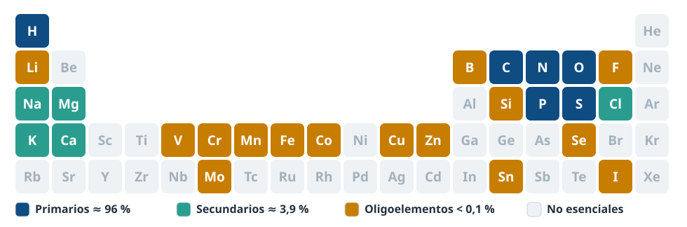
Figura 1. Los bioelementos en la tabla periódica.
Composición del cuerpo humano (% en masa)
O65 %
C18,5 %
H9,5 %
N3,3 %
Ca1,5 %
P1,0 %
K0,4 %
S0,3 %
Na, Cl0,2 %
Mg0,1 %
El oxígeno es el más abundante en masa porque el agua supone en torno al 60-65 % del cuerpo y casi el 90 % de la masa del agua es oxígeno. En número de átomos, el más abundante es el hidrógeno.
¿Por qué C, H, O y N son los elementos de la vida?
Forman enlaces covalentes estables compartiendo electrones, porque son átomos pequeños.
El carbono es tetravalente: sus cuatro enlaces se orientan hacia los vértices de un tetraedro, se une a otros carbonos formando cadenas lineales, ramificadas o anillos y puede formar enlaces simples, dobles o triples. Esto permite una enorme variedad de moléculas.
El carbono se une a H, O, N y S formando grupos funcionales distintos (–OH, –COOH, –NH₂…), que dan propiedades diferentes a cada familia de moléculas.
O y N son muy electronegativos y forman enlaces polares, lo que hace que muchas biomoléculas sean solubles en agua.
Los compuestos de C, H y O se oxidan fácilmente y liberan energía (CO₂ y H₂O), y el CO₂ es gaseoso y soluble, por lo que circula entre los seres vivos y el medio.
El P y el S forman enlaces que se rompen con relativa facilidad. El fósforo forma los enlaces ricos en energía del ATP.
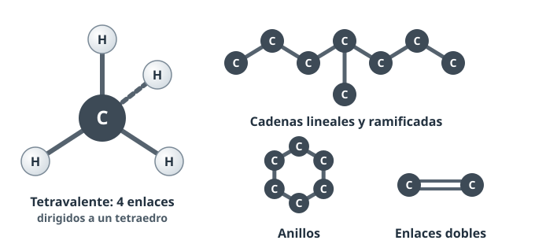
Figura 2. El carbono, base de la variedad de las moléculas orgánicas.
Funciones de los principales bioelementos
Bioelemento
Dónde aparece / función
C, H, O
Esqueleto de todas las biomoléculas orgánicas. El O también interviene en la respiración celular.
N
Aminoácidos y proteínas, bases nitrogenadas de los ácidos nucleicos.
P
Ácidos nucleicos, fosfolípidos de membrana, ATP (transferencia de energía), fosfato cálcico de huesos y dientes.
S
Aminoácidos cisteína y metionina (puentes disulfuro), coenzima A.
Na⁺, K⁺, Cl⁻
Equilibrio osmótico, potencial de membrana e impulso nervioso.
Ca
Huesos, dientes y conchas (sales insolubles); como Ca²⁺: contracción muscular, coagulación, señalización celular.
Mg
Cofactor de muchas enzimas (sobre todo las que usan ATP), forma parte de la clorofila.
Fe
Hemoglobina y mioglobina (transporte de O₂), citocromos (cadena respiratoria).
I
Hormonas tiroideas (tiroxina).
F
Esmalte dental y huesos.
Cu, Zn, Mn, Se, Co
Cofactores enzimáticos. El Co forma parte de la vitamina B₁₂.
Error típico
«Oligoelemento» no significa «poco importante». Significa que se necesita en poca cantidad. La carencia de hierro produce anemia, y la de yodo, bocio.
3Biomoléculas: concepto y clasificación
Las biomoléculas o principios inmediatos son las moléculas formadas por bioelementos unidos mediante enlaces químicos que forman parte de los seres vivos.
Criterio de clasificación: su naturaleza química (si tienen o no esqueleto de carbono) y si son exclusivas o no de los seres vivos.
Tipo
Características
Ejemplos
Inorgánicas
No tienen esqueleto de carbono (salvo CO₂ y carbonatos). No son exclusivas de la materia viva: también existen en la materia inerte.
Agua, sales minerales, gases (O₂, CO₂)
Orgánicas
Tienen esqueleto de carbono unido a H, O, N… Son exclusivas de los seres vivos (o producidas por ellos).
Glúcidos, lípidos, proteínas, ácidos nucleicos
Muchas biomoléculas orgánicas son polímeros (macromoléculas) formados por la unión de monómeros. Por ejemplo, el almidón está formado por glucosas, las proteínas por aminoácidos y los ácidos nucleicos por nucleótidos. Los lípidos no son polímeros.
Cómo reconocer cada tipo en una fórmula
Las directrices piden identificar la biomolécula por su estructura hasta el nivel de tipo. Busca estas «señas de identidad»:
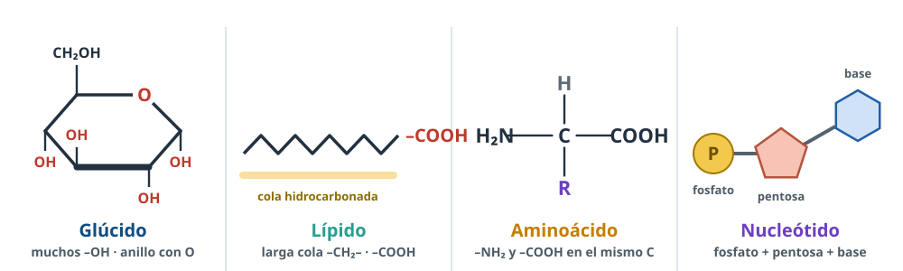
Figura 3. Las «señas de identidad» de cada tipo de biomolécula.
Si ves…
Es…
Cadena o anillo de C con muchos –OH y un grupo carbonilo (C=O); en el anillo, un O dentro del ciclo
Glúcido (monosacárido); si hay varios anillos unidos por –O–, un disacárido o polisacárido
Largas cadenas hidrocarbonadas (–CH₂–CH₂–…) con un –COOH al final o unidas a glicerina por enlaces éster; o cuatro anillos fusionados (esterano)
Un carbono con un –NH₂, un –COOH, un H y un radical R
Aminoácido. Si hay varios unidos por –CO–NH–: péptido o proteína
Fosfato + pentosa (anillo de 5 átomos) + base nitrogenada (anillos con N)
Nucleótido. En cadena, ácido nucleico
H₂O, iones (Na⁺, Cl⁻, HCO₃⁻…), sin esqueleto de carbono
Biomolécula inorgánica
4Enlaces químicos e interacciones
Los bioelementos se unen mediante enlaces fuertes (intramoleculares), que forman las moléculas, y las moléculas se relacionan entre sí mediante interacciones débiles (intermoleculares), que determinan su forma tridimensional y sus propiedades físicas.
Enlace / interacción
En qué consiste
Ejemplo biológico
Covalente apolar
Dos átomos comparten electrones por igual (electronegatividad similar). Fuerte (≈ 350 kJ/mol).
C–C y C–H de las cadenas de los ácidos grasos
Covalente polar
Se comparten electrones, pero el átomo más electronegativo (O, N) los atrae más, y aparecen cargas parciales δ⁺ y δ⁻.
O–H del agua y de los glúcidos; N–H de los aminoácidos
Iónico
Atracción electrostática entre iones de carga opuesta tras la cesión de electrones. Fuerte en el cristal, pero en el agua los iones se separan.
NaCl, fosfato cálcico de los huesos
Puente de hidrógeno
Atracción entre un H unido a un átomo muy electronegativo (O, N) y otro átomo electronegativo cercano. Débil (≈ 20 kJ/mol).
Agua líquida, doble hélice del ADN, α-hélice y lámina β de proteínas
Interacción electrostática (iónica débil)
Atracción entre grupos con carga opuesta dentro de una molécula o entre moléculas.
Entre –COO⁻ y –NH₃⁺ en la estructura terciaria de las proteínas
Interacción hidrofóbica
Las moléculas o partes apolares se agrupan para evitar el contacto con el agua.
Bicapa lipídica de las membranas, plegamiento de proteínas
Fuerzas de Van der Waals
Atracciones muy débiles debidas a fluctuaciones momentáneas de la carga eléctrica entre átomos muy próximos.
Entre las colas de los ácidos grasos en las membranas
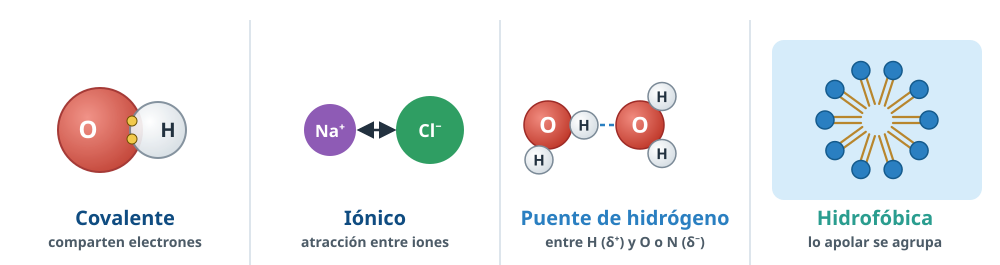
Figura 4. Enlaces fuertes e interacciones débiles.
Importancia biológica
Los enlaces covalentes forman el esqueleto estable de las biomoléculas: la secuencia de bases del ADN o de aminoácidos de una proteína no se altera con facilidad.
Las interacciones débiles son individualmente frágiles, pero muy numerosas. Juntas estabilizan la forma tridimensional y, como se rompen y forman con facilidad, permiten procesos reversibles: abrir la doble hélice para replicarla, la unión enzima-sustrato o la unión antígeno-anticuerpo.
Truco para recordarlo
«Lo fuerte construye, lo débil da forma». Los enlaces covalentes construyen la molécula; los puentes de hidrógeno, las interacciones hidrofóbicas, etc. le dan su forma y su función.
5Grupos funcionales Nuevo 26-27
Un grupo funcional es una agrupación de átomos unida al esqueleto de carbono que determina las propiedades químicas de la molécula. Reconocerlos permite deducir de qué tipo de biomolécula se trata y cómo se comporta.
Grupo
Fórmula
Dónde aparece
Qué propiedad aporta
Hidroxilo
–OH
Monosacáridos, glicerina, colesterol
Polar: forma puentes de H con el agua y aporta solubilidad
Carbonilo (aldehído)
–CHO
Aldosas (glucosa, ribosa)
Polar y reductor: se oxida con facilidad (base de la prueba de Benedict)
Dos –SH se unen formando un puente disulfuro (–S–S–), que estabiliza las proteínas
Amida
–CO–NH–
Enlace peptídico, asparagina, glutamina
Polar; une los aminoácidos de las proteínas
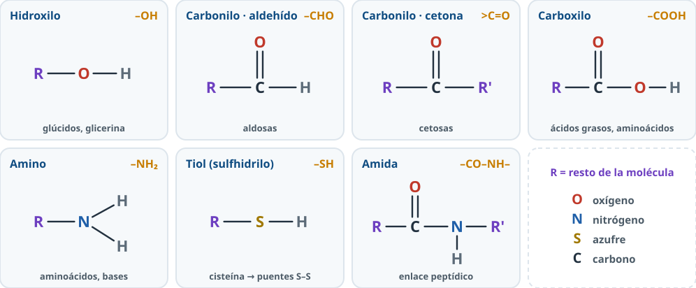
Figura 5. Los grupos funcionales de las directrices.
Tres relaciones que piden las directrices
Polaridad de los glúcidos
Sus numerosos grupos hidroxilo y el carbonilo forman puentes de hidrógeno con el agua: los monosacáridos y disacáridos son solubles.
Lípidos anfipáticos
Un ácido graso tiene una cabeza polar (el –COOH, o el grupo fosfato en los fosfolípidos) y una cola apolar hidrocarbonada. En el agua forman micelas y bicapas.
Aminoácidos anfóteros
Tienen un grupo carboxilo (ácido) y un grupo amino (básico): pueden ceder o captar H⁺ y comportarse como ácido o como base según el pH.
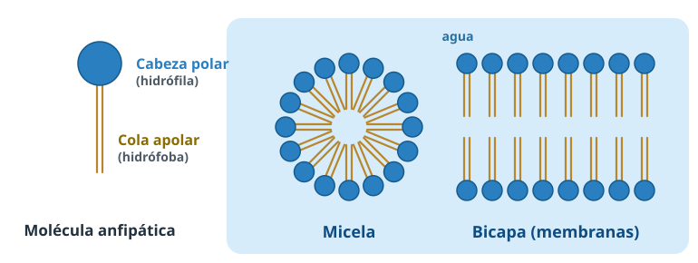
Figura 6. Lípidos anfipáticos en el agua.Figura 7. Carácter anfótero de los aminoácidos.
Error típico
No confundas el carbonilo (C=O) con el carboxilo (–COOH, que tiene un C=O y además un –OH). Los monosacáridos tienen carbonilo; los ácidos grasos y los aminoácidos, carboxilo.
6El agua: abundancia y estructura
El agua es la biomolécula más abundante de los seres vivos: alrededor del 60-65 % en una persona adulta. La proporción varía:
Según la especie: una medusa tiene un 95-98 % de agua; una semilla, un 10-20 %.
Según el tejido: la sustancia gris del cerebro tiene más del 80 %; el hueso, en torno al 20 %, y el esmalte dental, menos del 5 %. Los tejidos con mayor actividad metabólica tienen más agua.
Según la edad: disminuye con los años, desde más del 90 % en el embrión hasta un 50-55 % en personas mayores.
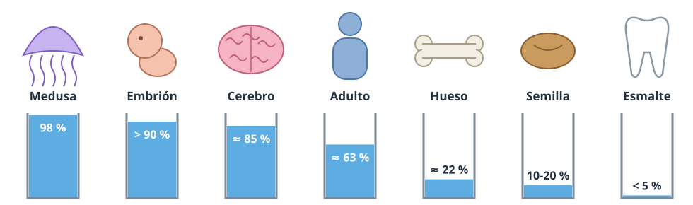
Figura 8. El contenido en agua varía con la especie, el tejido y la edad.
Estructura de la molécula
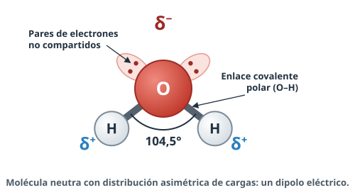
Figura 9. La molécula de agua es un dipolo eléctrico.
Está formada por dos átomos de hidrógeno unidos a un átomo de oxígeno mediante enlaces covalentes (polares).
Los enlaces forman un ángulo de unos 104,5° (los criterios aceptan 105°), por lo que la molécula tiene forma de V, no lineal.
El oxígeno es más electronegativo: atrae hacia sí los electrones compartidos y tiene además dos pares de electrones sin compartir. Por eso soporta una carga parcial negativa (δ⁻), mientras que los hidrógenos tienen carga parcial positiva (δ⁺).
La molécula es eléctricamente neutra, pero su carga está repartida de forma asimétrica: es un dipolo eléctrico.
Puentes de hidrógeno
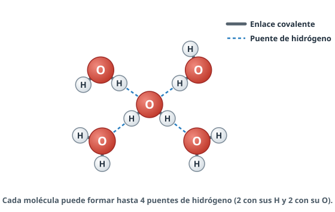
Figura 10. Cada molécula de agua puede formar hasta cuatro puentes de hidrógeno.
Gracias a su polaridad, el H (δ⁺) de una molécula es atraído por el O (δ⁻) de otra: se forma un puente (o enlace) de hidrógeno. Cada molécula puede formar hasta cuatro. En el agua líquida se rompen y se rehacen continuamente, de modo que las moléculas forman una red dinámica muy cohesionada.
La idea clave del tema
Casi todas las propiedades del agua se explican con dos ideas: su polaridad y los puentes de hidrógeno. Por ejemplo, el H₂S tiene una masa parecida y es un gas a temperatura ambiente; el agua es líquida porque los puentes de hidrógeno mantienen unidas sus moléculas.
Error típico
Dentro de la molécula los enlaces O–H son covalentes; entre moléculas se forman puentes de hidrógeno. Si te preguntan «qué enlace se establece entre dos moléculas de agua», la respuesta es «puente de hidrógeno», no «covalente».
7Propiedades y funciones del agua
Es la pregunta estrella de este tema. Para responder bien, relaciona siempre: propiedad → causa → función biológica → ejemplo.
Propiedad
Causa
Función biológica
Elevada constante dieléctrica (gran poder disolvente)
Polaridad: rodea los iones y las moléculas polares y los mantiene separados
Disolvente universal, transporte de sustancias (sangre, savia), medio de las reacciones
Elevada cohesión y tensión superficial
Puentes de hidrógeno entre sus moléculas; es prácticamente incompresible
Estructural: volumen y turgencia de las células, esqueleto hidrostático; desplazamiento sobre la superficie; amortiguadora y lubricante (líquido sinovial)
Elevada adhesión
Puentes de hidrógeno con otras superficies polares
Capilaridad: ascenso de la savia bruta por el xilema
Elevado calor específico (1 cal/g·°C)
Parte del calor absorbido se usa en romper puentes de hidrógeno antes de que suba la temperatura
Termorreguladora: amortigua los cambios de temperatura del organismo y del medio
Elevado calor de vaporización (540 cal/g)
Para evaporarse hay que romper todos los puentes de hidrógeno
Refrigerante: el sudor y la transpiración de las hojas enfrían al evaporarse
Menor densidad en estado sólido (máxima a 4 °C)
En el hielo los puentes de hidrógeno forman una red cristalina abierta, con más espacio entre moléculas
El hielo flota y aísla: permite la vida acuática en zonas frías
Figura 11. Disolución del NaCl: cada ion queda rodeado por una capa de moléculas de agua (solvatación).
Cuando se echa sal común en el agua, las moléculas de agua se orientan alrededor de los iones: el O (δ⁻) hacia el Na⁺ y los H (δ⁺) hacia el Cl⁻. Así debilitan la atracción entre ellos, los separan del cristal y los mantienen dispersos rodeados de una capa de solvatación. Según su comportamiento en agua, las sustancias pueden ser:
Hidrófilas: iones y moléculas polares (sales, glucosa, aminoácidos). Se disuelven.
Hidrófobas: moléculas apolares (grasas, colesterol). No se disuelven y se agrupan entre sí.
Anfipáticas: tienen una parte polar y otra apolar (fosfolípidos, jabones). Forman micelas, monocapas y bicapas, que son la base de las membranas celulares.
Cohesión, tensión superficial, adhesión y capilaridad
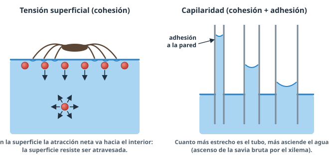
Figura 12. Tensión superficial y capilaridad.
Cohesión: las moléculas de agua se mantienen fuertemente unidas entre sí por puentes de hidrógeno. Por eso el agua es casi incompresible y actúa como esqueleto hidrostático (lombrices) y da turgencia a las plantas herbáceas.
Tensión superficial: las moléculas de la superficie solo son atraídas hacia los lados y hacia el interior, y forman una «película» que resiste ser atravesada. Gracias a ella los zapateros caminan sobre las charcas.
Adhesión: el agua se une a superficies polares, como las paredes de los vasos del xilema.
Capilaridad = cohesión + adhesión. El agua asciende por tubos muy finos: contribuye al ascenso de la savia bruta y a que el agua del suelo suba entre sus partículas.
Calor específico y calor de vaporización
El calor específico es el calor necesario para elevar 1 °C la temperatura de 1 g de sustancia. El del agua es muy alto porque parte de la energía se gasta en romper puentes de hidrógeno antes de que aumente la agitación de las moléculas. Por eso el agua absorbe mucho calor sin que su temperatura suba demasiado: los organismos (y los océanos) amortiguan los cambios bruscos de temperatura.
El calor de vaporización también es alto: para que una molécula pase a vapor hay que romper todos sus puentes de hidrógeno. Al evaporarse, el agua se lleva mucho calor de la superficie: así refrigeran el sudor en los animales y la transpiración en las hojas.
Así lo preguntan
«La hoja de una planta al sol tiene menos temperatura que las rocas de su entorno. ¿A qué propiedad del agua se debe?» → Al elevado calor de vaporización: el agua que transpira la hoja absorbe mucho calor al evaporarse y la refrigera.
Densidad: por qué flota el hielo
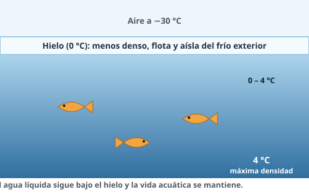
Figura 13. El hielo actúa como capa aislante y el agua líquida se mantiene debajo.
En la mayoría de sustancias el sólido es más denso que el líquido. En el agua no: al congelarse, cada molécula forma 4 puentes de hidrógeno fijos y se origina una red cristalina abierta, con más espacio entre moléculas. El hielo es menos denso que el agua líquida (cuya densidad es máxima a 4 °C) y flota. La capa de hielo aísla el agua de debajo, que permanece líquida, y la vida acuática se mantiene en las zonas frías. Si el hielo fuese más denso, se hundiría y los lagos se congelarían desde el fondo.
Ionización del agua y pH
Una proporción mínima de moléculas se disocia: H₂O ⇄ H⁺ + OH⁻ (en realidad el H⁺ se une a otra molécula y forma H₃O⁺). En el agua pura, [H⁺] = [OH⁻] = 10⁻⁷ mol/L. El pH mide la acidez: pH = −log [H⁺]. El agua pura tiene pH = 7 (neutro); por debajo de 7 el medio es ácido, y por encima, básico. Cada unidad de pH supone una concentración de H⁺ diez veces mayor o menor.
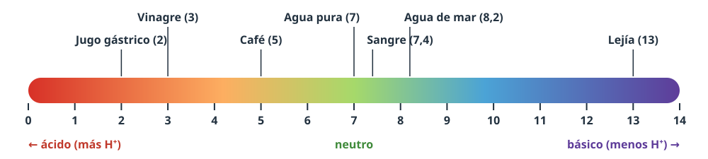
Figura 14. La escala de pH.
Agua metabólica
El agua no solo se bebe: también se produce en el metabolismo. En la respiración celular, al final de la cadena respiratoria, el O₂ acepta electrones y protones y se forma agua. Algunos animales del desierto, como la rata canguro, sobreviven sin beber gracias a esta agua metabólica, obtenida por la oxidación de grasas, glúcidos y proteínas.
Lista de funciones del agua (para «cite cinco funciones»)
Disolvente · transporte · termorreguladora · estructural · amortiguadora o lubricante · bioquímica (participa en reacciones como la hidrólisis o la fotosíntesis).
8Sales minerales
Las sales minerales son biomoléculas inorgánicas que aparecen en los seres vivos de tres formas. Su solubilidad determina su función:
Precipitadas (insolubles)
Forman estructuras sólidas: función estructural de sostén y protección.
Disueltas (iones)
Disociadas en cationes y aniones: función reguladora (equilibrio osmótico, pH) y funciones específicas.
Asociadas a moléculas orgánicas
Fosfolípidos, fosfoproteínas (caseína de la leche), Fe de la hemoglobina, Mg de la clorofila, fosfato de los nucleótidos.
Sales precipitadas: función estructural
Sal
Dónde aparece
Fosfato de calcioCa₃(PO₄)₂
Huesos y dientes de los vertebrados (en forma de hidroxiapatito)
Carbonato de calcioCaCO₃
Conchas de moluscos, caparazones de crustáceos, esqueletos de corales, otolitos del oído interno, cáscara de huevo
Sílice SiO₂
Caparazón de las diatomeas, esqueleto de algunas esponjas, tallos de gramíneas y colas de caballo
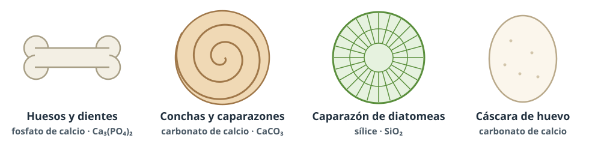
Figura 15. Sales precipitadas con función estructural.
Sales disueltas: los iones más importantes
Ion
Función
Na⁺ y K⁺
Equilibrio osmótico y transmisión del impulso nervioso. El Na⁺ predomina fuera de la célula y el K⁺ dentro; la bomba de Na⁺/K⁺ mantiene esta diferencia, que origina el potencial de membrana.
Ca²⁺
Contracción muscular y señalización celular (mensajero intracelular, liberación de neurotransmisores). También coagulación de la sangre.
Mg²⁺
Actividad enzimática: cofactor de muchas enzimas, sobre todo las que usan ATP. Forma parte de la clorofila.
Cl⁻
Equilibrio osmótico (acompaña al Na⁺). Forma el HCl del jugo gástrico.
HCO₃⁻ y HPO₄²⁻ / H₂PO₄⁻
Sistemas tampón: mantienen el pH (bicarbonato en el medio extracelular y fosfato en el intracelular).
Fe²⁺ / Fe³⁺
Transporte de O₂ (hemoglobina) y de electrones (citocromos).
I⁻
Síntesis de las hormonas tiroideas.
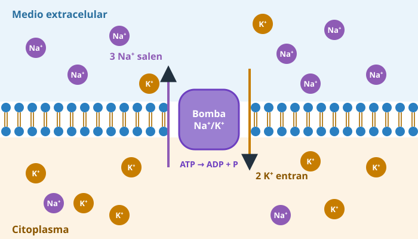
Figura 16. El Na⁺ y el K⁺ a ambos lados de la membrana: base del impulso nervioso.
Funciones de las sales disueltas
Mantener el equilibrio osmótico (el volumen celular) entre la célula y el medio.
«Relaciona la solubilidad de las sales con las funciones que cumplen». → Las insolubles forman estructuras rígidas (función estructural: huesos, conchas). Las solubles, disociadas en iones, cumplen funciones reguladoras (ósmosis, pH) y específicas (impulso nervioso, contracción).
9Difusión, ósmosis y comportamiento celular
Proceso
Qué pasa
Sentido
Difusión
Pasan las moléculas de soluto
De la disolución más concentrada a la más diluida
Ósmosis
Pasa el disolvente (agua) a través de una membrana semipermeable, que no deja pasar el soluto
De la disolución más diluida (hipotónica) a la más concentrada (hipertónica), hasta igualar concentraciones
Diálisis
Pasan el agua y los solutos pequeños a través de una membrana que retiene las macromoléculas
Según la concentración de cada soluto (es lo que hace el riñón artificial, la hemodiálisis)
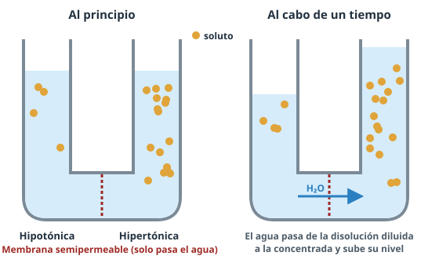
Figura 17. El agua pasa hacia la disolución más concentrada.
La presión osmótica es la presión que habría que aplicar sobre la disolución más concentrada para impedir el paso de agua. Comparando dos disoluciones:
Hipotónico: el medio tiene menor concentración de solutos que el interior celular.
Hipertónico: el medio tiene mayor concentración de solutos.
Isotónico: misma concentración. No hay paso neto de agua.
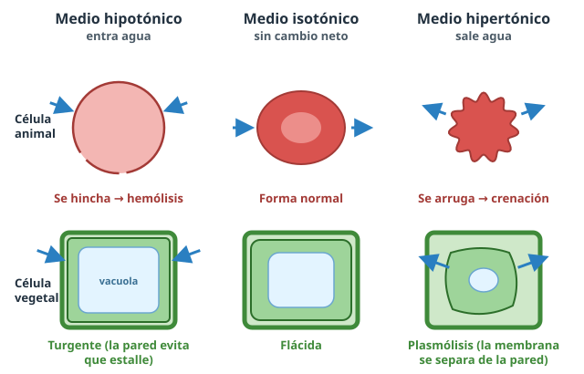
Figura 18. Células animales y vegetales en medios de distinta concentración.
Medio
Célula animal (sin pared)
Célula vegetal (con pared)
Hipotónico
Entra agua, se hincha y puede estallar: lisis (en glóbulos rojos, hemólisis)
Entra agua, la vacuola se llena y la célula queda turgente. La pared celular impide que estalle
Isotónico
Sin cambio de volumen
Sin cambio (célula flácida)
Hipertónico
Sale agua y se arruga (crenación)
Sale agua, la membrana se separa de la pared: plasmólisis
Errores típicos
En la ósmosis pasa el agua, no la sal. Y va hacia donde hay más soluto («el agua sigue a la sal»).
«Hipertónico» e «hipotónico» son siempre comparativos: di respecto a qué (el medio respecto al interior celular).
La plasmólisis es propia de las células con pared. En un glóbulo rojo hablamos de crenación o deshidratación. Algunos criterios de la PAU aceptan «plasmólisis» para el glóbulo rojo, pero el término preciso es crenación.
La célula vegetal turgente no estalla gracias a la pared celular. No confundas turgencia con lisis.
Aplicaciones que caen en el examen
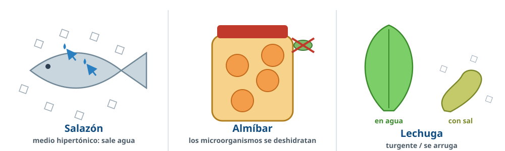
Figura 19. La ósmosis en la cocina.
Situación
Explicación
Salazón (jamón, bacalao) y almíbar o mermelada
La sal o el azúcar crean un medio hipertónico: los microorganismos pierden agua por ósmosis y no pueden proliferar, y el alimento queda con poca agua disponible.
Lechuga en agua / aliñada con sal
En agua (hipotónico) entra agua y se pone turgente; con sal (hipertónico) sale agua y se arruga.
Uvas pasas en agua
Su interior tiene mucho azúcar (hipertónico): entra agua por ósmosis y recuperan su tamaño.
Suero fisiológico (NaCl al 0,9 %)
Es isotónico con la sangre: se puede inyectar sin dañar los glóbulos rojos. Con agua destilada se producirían hemólisis.
Plantas de suelos salinos (halófitas)
Acumulan sales en sus células para que su interior sea más concentrado que el suelo y el agua siga entrando.
Bacterias en medio hipotónico
Sobreviven gracias a su pared de mureína; si se destruye (lisozima, penicilina), estallan.
10Sistemas tampón y regulación del pH
Las enzimas y las demás proteínas solo funcionan dentro de un margen estrecho de pH; fuera de él se desnaturalizan. La sangre humana se mantiene entre 7,35 y 7,45. Esto se consigue gracias a los sistemas tampón (amortiguadores): disoluciones de un ácido débil y su base conjugada que captan o ceden H⁺ y amortiguan las variaciones de pH.
Tampón bicarbonato (medio extracelular, sangre)
CO₂ + H₂O ⇄ H₂CO₃ ⇄ HCO₃⁻ + H⁺
Si el medio se acidifica (sobran H⁺)
El HCO₃⁻ capta H⁺ y el equilibrio se desplaza hacia la izquierda. El H₂CO₃ formado se descompone en CO₂, que se elimina por los pulmones.
Si el medio se basifica (faltan H⁺)
El H₂CO₃ se disocia y libera H⁺; el equilibrio se desplaza hacia la derecha y el pH vuelve a bajar.
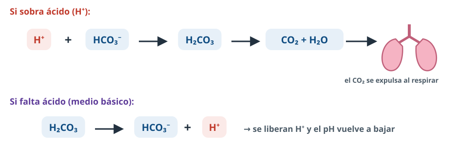
Figura 20. Funcionamiento del tampón bicarbonato.
Tampón fosfato (medio intracelular)
H₂PO₄⁻ ⇄ HPO₄²⁻ + H⁺
Funciona igual: el HPO₄²⁻ capta los H⁺ que sobran y el H₂PO₄⁻ cede H⁺ cuando faltan.
Conexión con la vida real
Si el pH de la sangre baja de 7,35 se produce acidosis (por ejemplo, en una diabetes descontrolada o en insuficiencia respiratoria), y si sube de 7,45, alcalosis (por ejemplo, al hiperventilar). Ambas alteran el funcionamiento del sistema nervioso y pueden ser mortales.
11Agua, minerales y salud
Las directrices (A.4.2) piden relacionar una ingesta insuficiente de agua y minerales con alteraciones del organismo.
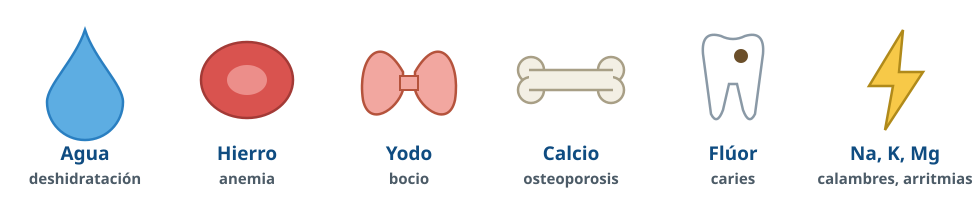
Figura 21. Algunas consecuencias de las carencias.
Carencia
Consecuencia
Agua
Deshidratación: fallo de la termorregulación (golpe de calor), alteración del equilibrio osmótico, menor rendimiento físico y cognitivo (cansancio, falta de concentración), cálculos y daño renal.
Hierro (Fe)
Anemia ferropénica: menos hemoglobina, menos O₂ transportado, cansancio.
Yodo (I)
Bocio (aumento de tamaño de la tiroides) e hipotiroidismo; en la infancia, retraso en el desarrollo.
Calcio (Ca)
Osteoporosis (huesos frágiles); en niños, alteraciones del crecimiento óseo (raquitismo, ligado también al déficit de vitamina D). Calambres y tetania.
Flúor (F)
Mayor riesgo de caries.
Sodio y potasio (Na, K)
Alteraciones del equilibrio osmótico y del funcionamiento neuromuscular: calambres, debilidad muscular, arritmias cardiacas.
Magnesio (Mg)
Calambres, temblores, fatiga y trastornos metabólicos (fallan las enzimas que lo necesitan).
El exceso también es perjudicial: el exceso de sal (Na⁺) se relaciona con la hipertensión arterial. La dieta mediterránea aporta agua y minerales de forma equilibrada: frutas, verduras y legumbres (K, Mg, Fe), lácteos (Ca), pescado (I, F), agua como bebida principal y sal con moderación (mejor yodada).
12Así se pregunta en la PAU
Preguntas reales de la PAU de Andalucía. Las respuestas siguen los criterios oficiales de corrección: palabra clave = lo que puntúa; texto violeta = aclaración nuestra.
PAU 2024 · Reserva B2 puntos
a) Describa la estructura de la molécula del agua [0,6]. b) Indique el tipo de enlace que se establece entre dos moléculas de agua [0,2]. c) Enumere cuatro propiedades físico-químicas del agua y relaciónelas con sus funciones biológicas [1,2].
Ver respuesta modelo
a) Dos hidrógenos unidos a un oxígeno por enlace covalente, formando un dipolo eléctrico. Conviene añadir el dibujo con el ángulo de 104,5° y las cargas parciales δ⁻ (O) y δ⁺ (H).
b) Puente de hidrógeno.
c) Cuatro de estas: cohesión y alta constante dieléctrica → transporte y disolvente; elevado calor específico → termorregulación; alto calor de vaporización → refrigerante; adhesión → capilaridad; menor densidad del hielo → vida acuática en zonas frías.
PAU 2022 · Junio1 puntoCon imagen
En relación con una imagen de varias moléculas de agua unidas (como la figura 10): a) Identifique la molécula representada [0,2]. b) Indique tres criterios utilizados para identificarla [0,3]. c) ¿Qué tipo de enlace establecen estas moléculas entre sí? [0,2] d) Indique tres funciones que realiza esta molécula en los seres vivos [0,3].
Ver respuesta modelo
a) Molécula de agua.
b) Los átomos que la forman (un O y dos H), el ángulo de los enlaces (unos 105°) y su carácter de dipolo (cargas parciales).
c) Enlace o puente de hidrógeno.
d) Tres de estas: disolvente, transporte, termorregulación, participa en reacciones, estructural, lubricante.
PAU 2014 · Modelo1 punto
¿Qué propiedad físico-química del agua permite a las plantas y animales mantener una temperatura interna relativamente constante? [0,3] ¿De qué característica de las moléculas de agua depende a su vez esta propiedad? [0,7]. Razone las respuestas.
Ver respuesta modelo
Su elevado calor específico (y su elevado calor de vaporización).
Depende de los puentes de hidrógeno que se establecen entre las moléculas de agua: para que suba la temperatura primero hay que romperlos, lo que consume calor. Por eso el agua absorbe mucho calor con un aumento pequeño de su temperatura.
PAU 2024 · Reserva A1 punto
Los zapateros son insectos capaces de sostenerse y desplazarse sobre la superficie de los estanques y charcas que habitan. a) ¿Qué propiedad del agua hace posible que estos animales no se hundan? [0,5] b) ¿Qué importancia tiene para las plantas el hecho de que el agua tenga gran capacidad para adherirse a las paredes de conductos muy estrechos? [0,5] Razone ambas respuestas.
Ver respuesta modelo
a) La elevada tensión superficial: las moléculas de la superficie sufren una atracción neta hacia el interior y la superficie resiste ser traspasada. Se debe a la cohesión que producen los puentes de hidrógeno.
b) La capilaridad contribuye al ascenso del agua por los vasos conductores(savia bruta por el xilema).
PAU 2018 · Suplente septiembre2 puntos
a) Diferencie entre los procesos de difusión y ósmosis [0,8]. b) Explique el comportamiento de la célula en función de la concentración del medio donde se encuentre [1,2].
Ver respuesta modelo
a) Difusión: los solutos pasan de la disolución más concentrada a la más diluida. Ósmosis: pasa el disolvente (agua) de la más diluida a la más concentradaa través de una membrana semipermeable.
b) Isotónico: el volumen no cambia (no hay intercambio neto). Hipertónico: el volumen disminuye porque sale agua. Hipotónico: el volumen aumenta porque entra agua. Puedes añadir que la célula animal puede estallar (lisis) y la vegetal no, gracias a su pared.
PAU 2017 · Junio1 punto
a) ¿Tendría una célula animal el mismo comportamiento que una célula vegetal en una solución hipotónica? [0,5]. b) ¿Y en una solución hipertónica? [0,5]. Razone las respuestas.
Ver respuesta modelo
a) No: en medio hipotónico la célula animal sufre lisis, mientras que la vegetal está protegida por la pared celular.
b) Sí (ambas pierden agua): la célula animal se deshidrata y se encoge; en la vegetal la membrana se separa de la pared y se produce plasmólisis.
PAU 2021 · Junio1 punto
Antes de colgar y someter a los jamones al proceso de secado en un lugar frío y seco, se introducen en sal abundante durante varios días. ¿Para qué se introducen en sal? Razone la respuesta [1].
Ver respuesta modelo
Para que las células de la parte externa queden en un medio hipertónico, pierdan agua por ósmosis y no puedan ser atacadas por los microorganismos, que tampoco pueden crecer en ese medio porque ellos también se deshidratan.
PAU 2022 · Junio1 puntoCompetencial
Tres tipos celulares diferentes (A, B y C) se mantienen en el laboratorio en un medio hipotónico. La célula A muere y las B y C sobreviven. Si a B y C se les añaden en medio hipotónico enzimas que degradan la pectina, la mureína o la celulosa, B muere solo al degradar la mureína y C muere al degradar la pectina o la celulosa. Indique para cada célula: a) su organización celular [0,15]; b) a qué grupo pertenece [0,15]; c) por qué se produce la muerte celular y cómo intervienen las enzimas [0,7].
Ver respuesta modelo
a) A: eucariota; B: procariota; C: eucariota. b) A: célula animal; B: bacteria; C: célula vegetal.
c) A: en medio hipotónico entra agua, se hincha y se rompe porque no tiene pared. B: sobrevive por su pared bacteriana, pero al degradar la mureína pierde la protección y muere. C: sobrevive por su pared, pero muere al degradar la pectina o la celulosa.
PAU 2023 · Julio1 punto
La rata canguro vive en el desierto sin necesidad de beber agua. Este animal usa diferentes mecanismos fisiológicos para evitar la pérdida de agua y además es capaz de utilizar agua de producción interna. a) ¿Cómo se denomina el agua así generada? [0,2] b) ¿Cómo la obtienen estos seres vivos? Razone la respuesta [0,8].
Ver respuesta modelo
a) Agua metabólica.
b) La oxidación de grasas, carbohidratos y proteínas produce, además de CO₂, agua, que mantiene los líquidos corporales. En la cadena respiratoria el O₂ es el aceptor final de electrones y se reduce a H₂O.
PAU 20132 puntos
Defina bioelemento y biomolécula [0,4]. Cite cuatro ejemplos de bioelementos y cuatro de biomoléculas [0,8] e indique la importancia biológica de cada uno de los ejemplos [0,8].
Ver respuesta modelo
Bioelemento: elemento químico que forma parte de la materia viva. Biomolécula: molécula formada por bioelementos unidos por enlaces que forma parte de los seres vivos.
Bioelementos: C, O, H, N, P… Biomoléculas: glúcidos, lípidos, proteínas, agua…
Importancia, por ejemplo: C, esqueleto de las moléculas orgánicas; N, aminoácidos y bases nitrogenadas; P, ácidos nucleicos, fosfolípidos y ATP; O, respiración y forma parte del agua. Glúcidos, energía y estructura; lípidos, reserva y membranas; proteínas, enzimas y estructura; agua, disolvente y termorregulación.
Práctica BioCelia · estilo 26-271 punto
Los aminoácidos pueden comportarse como ácidos o como bases según el pH del medio. a) Indique qué grupos funcionales son responsables de este comportamiento y cómo se denomina esta propiedad [0,5]. b) Indique qué grupo funcional, muy abundante en los monosacáridos, explica su solubilidad en agua y por qué [0,5].
Ver respuesta modelo
a) El grupo carboxilo (–COOH), que puede ceder H⁺ (ácido), y el grupo amino (–NH₂), que puede captar H⁺ (base). La propiedad se llama carácter anfótero.
b) El grupo hidroxilo (–OH): es polar y forma puentes de hidrógeno con las moléculas de agua.
Práctica BioCelia · estilo 26-271 punto
A un paciente deshidratado se le administra por vía intravenosa suero fisiológico (NaCl al 0,9 %). a) Explique por qué no se le inyecta agua destilada [0,5]. b) Indique dos consecuencias de la deshidratación para el organismo [0,5].
Ver respuesta modelo
a) El suero al 0,9 % es isotónico con el plasma y no altera las células sanguíneas. El agua destilada es un medio hipotónico: entraría agua por ósmosis en los glóbulos rojos, que se hincharían y estallarían (hemólisis).
b) Alteración de la termorregulación (golpe de calor) y del equilibrio osmótico, disminución del rendimiento físico y cognitivo, daño renal.
¿Qué tienen en común el Fe, el I y el F? VerSon oligoelementos: imprescindibles, pero en cantidades inferiores al 0,1 %.
¿Con qué criterio se clasifican las biomoléculas en orgánicas e inorgánicas? VerPor su naturaleza química: las orgánicas tienen esqueleto de carbono y son exclusivas de los seres vivos; las inorgánicas, no.
¿Qué tipo de interacción mantiene unida la bicapa lipídica? VerInteracciones hidrofóbicas (y fuerzas de Van der Waals entre las colas).
¿Qué grupo funcional forma los puentes disulfuro? VerEl grupo tiol o sulfhidrilo (–SH) de la cisteína.
¿Por qué el agua es un dipolo si es eléctricamente neutra? VerPorque el O, más electronegativo, atrae los electrones (δ⁻) y los H quedan con carga parcial positiva (δ⁺); además la molécula tiene forma angular (104,5°), así que las cargas no se compensan en el espacio.
¿Por qué el agua es líquida a temperatura ambiente? VerPor los puentes de hidrógeno entre sus moléculas.
¿Qué propiedad del agua explica la capilaridad? VerLa elevada fuerza de cohesión-adhesión.
¿Qué diferencia hay entre calor específico y calor de vaporización? VerEl calor específico es el necesario para subir 1 °C 1 g de agua (función termorreguladora); el de vaporización, el necesario para evaporar 1 g (función refrigerante).
Cita una sal precipitada y dónde aparece. VerFosfato cálcico en huesos y dientes; carbonato cálcico en conchas y caparazones; sílice en diatomeas.
¿Qué ion interviene en la contracción muscular? ¿Y cuál es cofactor de muchas enzimas? VerCa²⁺ en la contracción muscular; Mg²⁺ como cofactor enzimático.
Un glóbulo rojo se pone en agua destilada. ¿Qué le ocurre? VerEl medio es hipotónico: entra agua por ósmosis, se hincha y estalla (hemólisis).
¿Qué hace el tampón bicarbonato si la sangre se acidifica? VerEl HCO₃⁻ capta los H⁺ sobrantes y forma H₂CO₃, que se descompone en CO₂ (se expulsa por los pulmones) y H₂O.
Fuentes: Directrices y orientaciones de la PAU de Biología de Andalucía (curso 2026-27); criterios oficiales de corrección de la PAU de Andalucía (2010-2024) y de otras comunidades (2025); resúmenes del departamento; Solomon, Berg y Martin, Biología (cap. 2). Esquemas: elaboración propia de BioCelia.